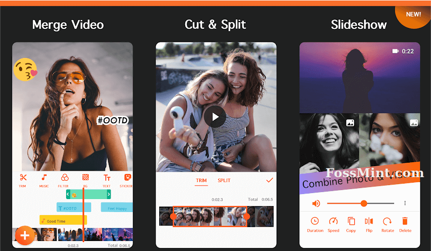
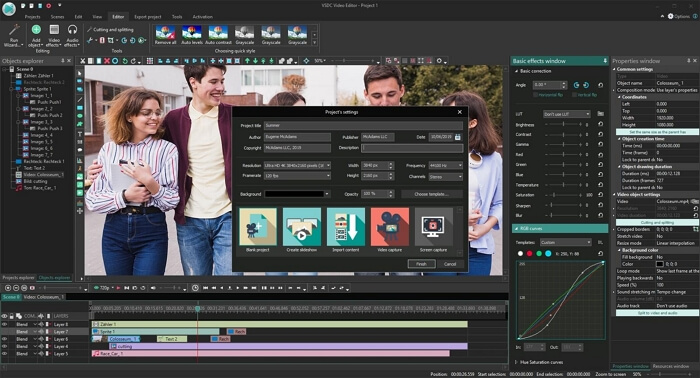
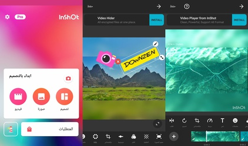
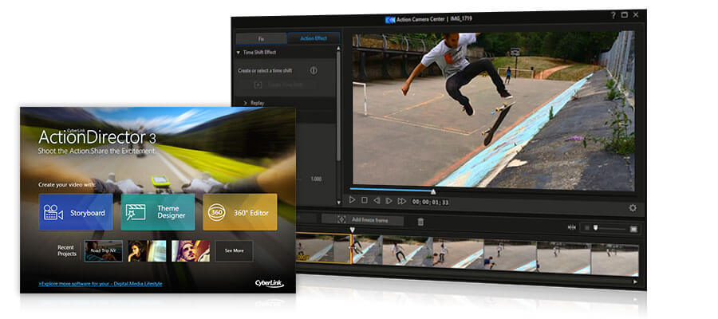

5 Applications pour réaliser vos propres montages vidéo sous Android.
Qu’ils s’agissent de faire défiler plusieurs photos avec une musique de fond ou de mettre plusieurs petits films les uns à la suite des autres, voici 5 application Android qui vous permettrons de le faire simplement.
Nul besoin d’avoir des compétences de vidéaste pour créer votre petit film personnalisé avec vos images favorites, vos souvenirs de vacances et même vos chansons préférée en arrière-plan sonore. Aujourd’hui, des applications simples à prendre en main génèrent un rendu de propre sans que cela ne vous demande trop de travail.
Quelle application télécharger sur votre téléphone ou tablette Android ? Découvrez notre sélection de 5 programmes à la portée de tous, que vous pourrez choisir selon leurs spécificités qu’ils proposent.
Youcut et son interface sans publicité.
Youcut et son interface sans publicité. Si vous pouvez facilement trouver des applications qui ne coûtent pas rien pour créer vos propres vidéos sur smartphone, certaines laissent des filigranes sur le film final ou ajoutent des publicités particulièrement gênantes dans l’interface. Youcut prend le contrepied de cette tendance, en vous offrant une application entièrement gratuite, sans publicité intrusive, avec la possibilité de télécharger votre création sans qu’un logo n’y soit apposé. Outre les fonctionnalités de base du montage vidéo telles que le découpage ou le rognage, vous pouvez aussi vous amuser à modifier la vitesse des films, pour créer des effets de ralentir ou d’accéléré, selon vos envies. Vous avez également la liberté d’utiliser différents filtres originaux, de choisir la taille de votre vidéo et même de traiter des formats 4k.

Editeur Montage, Montage vidéo simple et efficace.
Vous n’avez pas besoin d’une application complexe, car vous cherchez simplement à monter un film avec plusieurs photos ou vidéos sans travail particuliers sur la forme ? Cette application vous offre amplement.
Dans une interface volontairement sobre, elle permet de découper les fichiers, de créer des diaporamas et de fusionner aisément plusieurs vidéos en une seule. L’éditeur prend malgré tout soin d’ajouter quelques fonctionnalités appréciables, comme la rotation des images ou encore la conversion des vidéos en format MP3.
Télécharger Editeur montage vidéo

InShot, pour publier des vidéos virales sur les réseaux sociaux.
Les utilisateurs de réseaux sociaux comme Instagram ou TikTok apprécieront tout particulièrement cette application de créer des vidéos spécialement taillées pour ces plateformes. En quelques mouvements, vous pouvez couper une vidéo pour qu’elle adopte un format plus court, à l’instar de ceux que l’on trouve sur Instagram ou TikTok.
Beaucoup d’options ont été pensées par les créateurs de l’application : vous pouvez vous amusez à ajouter des textes, à utiliser des filtres et de redoubler d’astuces pour poster des vidéos toujours plus originales.
Bien que le montage de vidéo soit une fonctionnalité gratuite, l’éditeur propose de payer pour obtenir davantage de marge de manœuvre ou retirer les publicités, par exemple. Aussi, il faudra débourser quelques euros si vous voulez aller plus loin dans la création.

Montage Vidéo ActionDirector, pour les néophytes.
Vous rêvez de faire votre propre montage vidéo, mais vous ne vous sentez plus suffisamment à l’aise avec les technologies pour vous lancer ?
Cette application pourrait vous correspondre. En effet, elle inclut des tutoriels qui vous permettent de vous familiariser plus facilement dans la pratique.
D’ailleurs, si vous voulez aller plus loin et que vous n’êtes pas assez habile avec votre téléphone, vous pouvez télécharger ce logiciel pour votre Pc de bureau.
Et d’obtenir encore plus de fonctionnalité (correction des couleurs, stabilisateur vidéo, effet d’action, etc…..)
Télécharger Vidéo ActionDirectior

VivaVidéo, pour des montages insolites.
Avec plus de 200 effets spéciaux, et notamment des stickers animés, VivaVidéo revendique son côté à la fois fonctionnel, simple d’utilisation et original.
Comme toutes les autres applications de cet article, elle permet de facilement fusionner des photos et vidéos pour s’en faire un film original.
On privilégiera cette alternative si on aime ajouter des éléments colorés et des animations qui changent de l’ordinaire, notamment en vue de publier par la suite sur Instagram ou TikTok. Bien évidemment, on peut mobiliser VivaVideo pour animer une chaîne YouTube sans aucun problème.


|